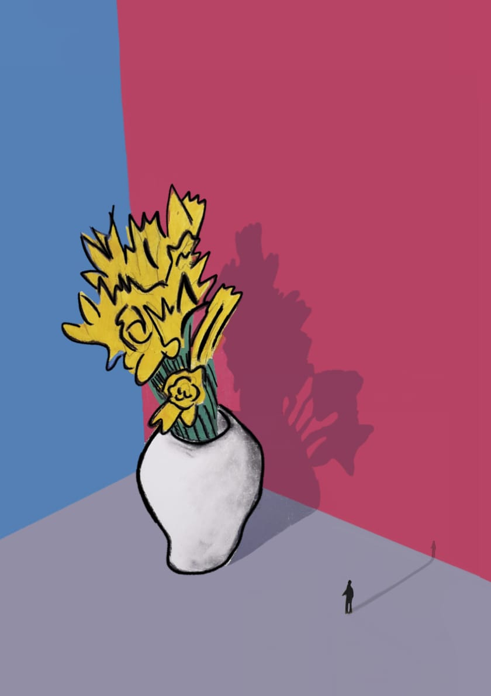
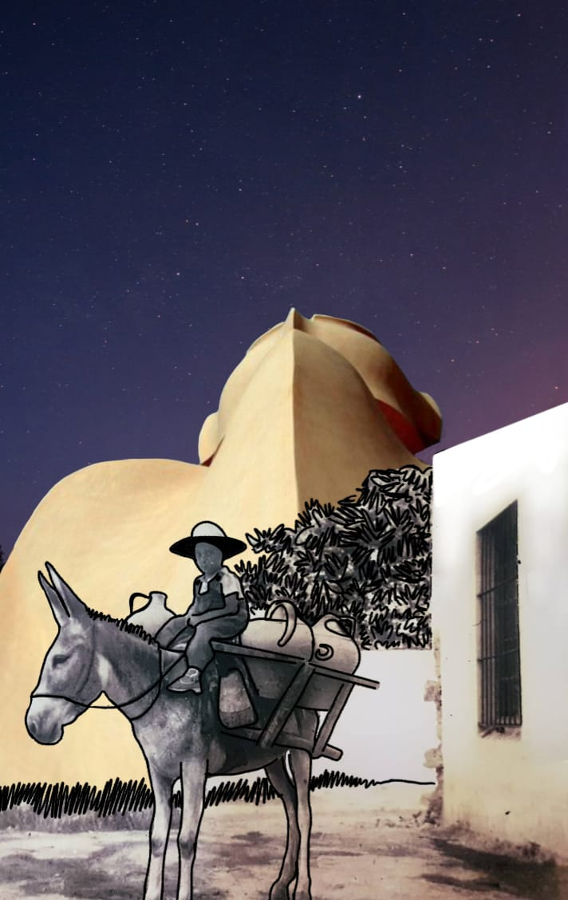

Costilla de Adán
Monstera deliciosa
Una planta de interior reconocida por sus hojas grandes y recortadas.
Precio: $12.400
Galería


Especificaciones
| Característica | Detalle |
|---|---|
| Tipo | Planta de interior |
| Luz | Indirecta y abundante |
| Riego | Moderado |
Cuidados
- Ubicarla cerca de una ventana sin sol directo intenso.
- Regarla cuando la capa superior de la tierra esté seca.
- Evitar que quede agua acumulada en la maceta.